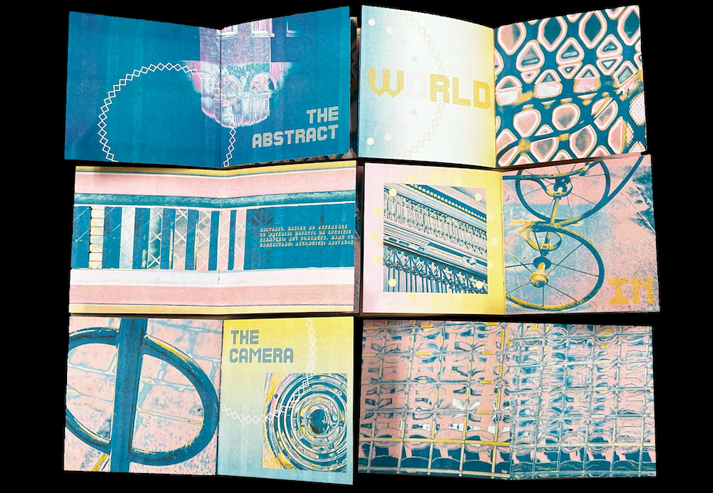
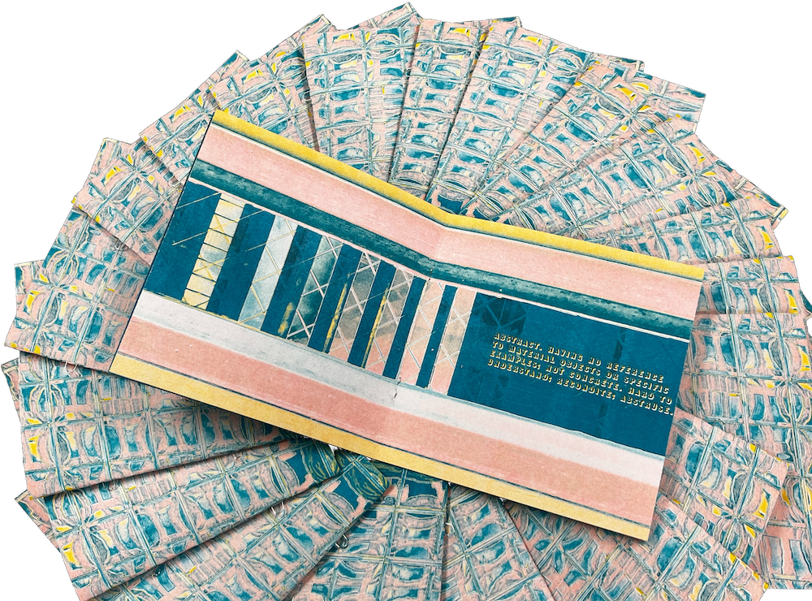

The meticulously crafted twelve-page zines were produced via RISO printing technique, featuring a collection of abstract photographs captured in and around the city of Providence, Rhode Island. This publication caught the unique views and perspectives of the city that people don't usually pay attention to.


